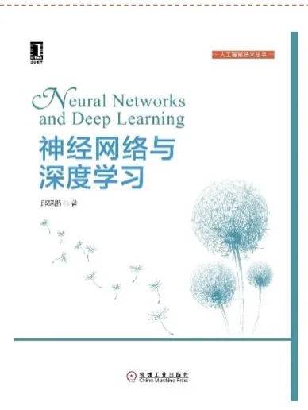

计算机视觉 · 第 7 章 循环神经网络
7.10 参考资料与课后作业
本章的最后两张课件是收尾：一张列出学习本章可以参考的资料，一张给出课后练习。课件把它们分开写，正好对应两条线——一条是「读什么」，一条是「动手写什么」。
1. 参考资料
课件列出的主要参考书是《神经网络与深度学习》第 6 章（邱锡鹏著）。这一章的教材目录恰好就是「循环神经网络」，本章的绝大部分内容——RNN 的结构与公式、BPTT 与 RTRL 两种参数学习算法、梯度消失与梯度爆炸、LSTM 与 GRU 的门控机制、堆叠与双向循环网络——都可以在该书第 6 章里找到更完整的推导。

课件另外还给了一份网络资料，标题是 “Recurrent Neural Networks”，地址为 https://towardsdatascience.com/recurrent-neural-networks-d4642c9bc7ce。这类文章的好处是配图多、偏直觉，适合在读完本章之后换一个角度回顾一遍。
另外提一句：本章 7.6 节末尾补充的 LSTM 出处（Hochreiter 与 Schmidhuber，1997）以及 7.7 节里用到的 GRU，都能在参考文献里顺着找到原始论文；如果打算做下面的编程练习，建议先把 7.4 节 BPTT 的推导再看一遍。
2. 课后作业
课件布置的是编程练习，地址是 https://github.com/nndl/exercise/ 下的 chap6_RNN 目录，共两题：
- 1）利用循环神经网络来生成唐诗；
- 2）利用循环神经网络来进行加法运算。
这两题分别对应本章的两条主线，练的东西并不重叠。
第一题「生成唐诗」走的是语言建模那条路（7.9 节第 2 小节）。它的输入是一串已经写下的字，输出是下一个字的概率分布；把生成的字符接回输入、一步步续写，就得到一首「诗」。这道题会逼着你去处理真实文本：怎么建立字典、怎么把字索引变成向量、怎么在训练时把目标错开一位、生成时又该按什么策略从概率分布里选字。
第二题「加法运算」走的是异步的序列到序列那条路（7.3 节第 4 小节）。加法不是逐位独立的运算——低位要向高位进位，所以网络必须把「有没有进位」这个信息在时间上保持住，再配合编码器—解码器的结构把两个加数的字符序列映射成结果的字符序列。它题面简单，却是检验 7.5 节长程依赖问题有没有真正解决的好例子：位数一多，靠短期记忆就会算错。
做完这两题，本章讲的结构、参数学习与门控机制就都有了一处落地的经验。
本节小结
- 主要参考书：《神经网络与深度学习》第 6 章，本章的结构、BPTT/RTRL、长程依赖、LSTM、GRU、深层循环网络等内容在该章有完整推导。
- 补充网络资料：“Recurrent Neural Networks”（towardsdatascience.com）。
- 课后作业为 nndl/exercise 仓库的 chap6_RNN 编程练习，共两题。
- 两题各练一条主线：生成唐诗练语言建模（字符级序列生成与采样），加法运算练异步的序列到序列（进位要求网络把信息在时间上保持住，直接对应长程依赖问题）。